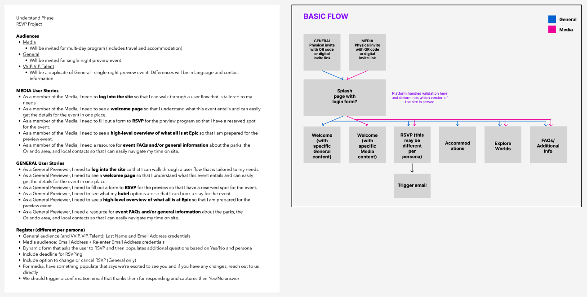
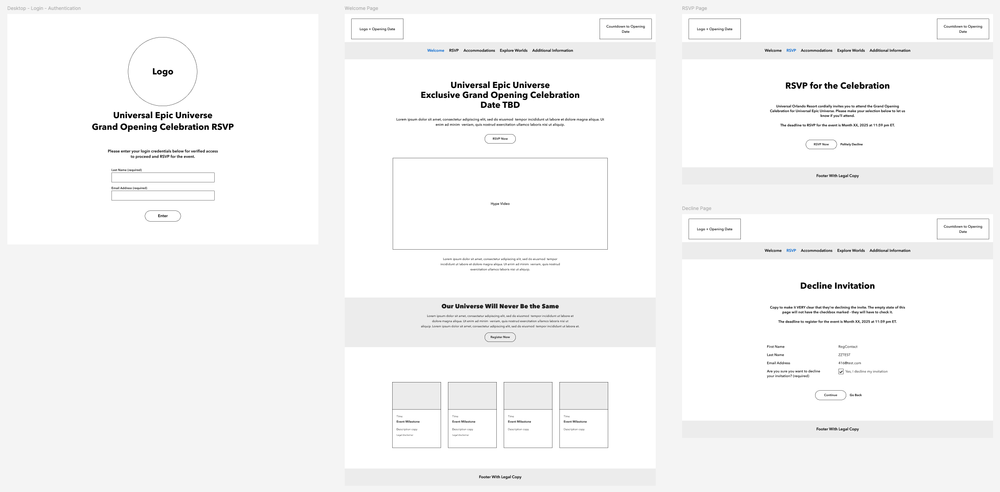
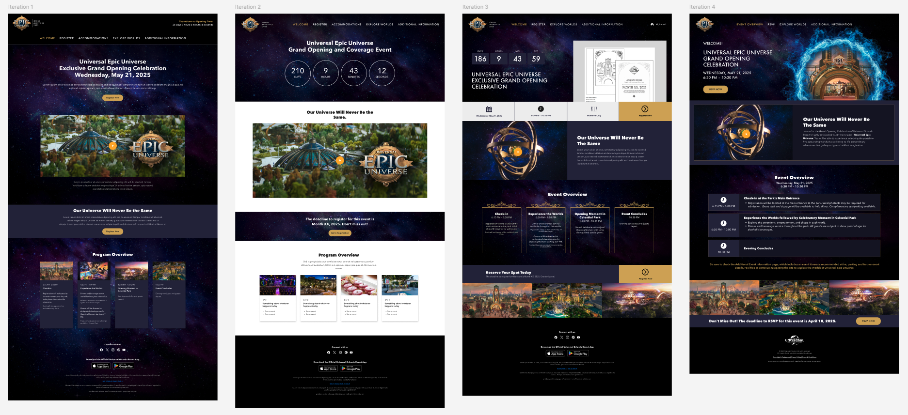
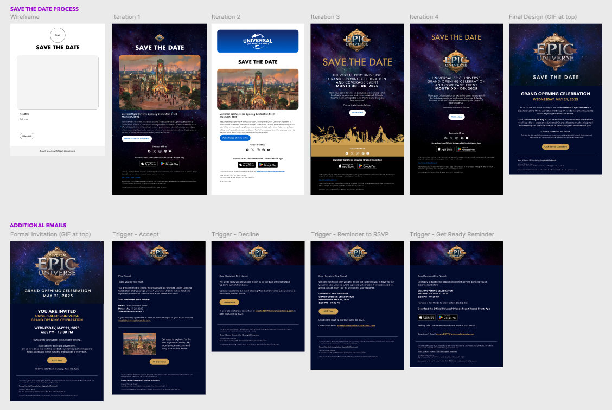

My Contribution
Over nine months, I designed wireframes, prototypes, and high-fidelity mockups for save-the-date and formal invitations, automated emails, and a website for desktop and mobile. I also created the experience map and documentation connecting these touchpoints, working with Events, PR, Legal, AR Innovations, Direct Digital Marketing, developers, and UX accessibility specialists.
Three Audiences, One Platform
Working with Events and PR, I identified three audiences with different registration needs: media, general guests, and VIPs. The experience needed to collect information relevant to each group within the same platform.
For example, media guests needed a way to indicate hotel-room needs and dietary restrictions. Those audience-specific requirements shaped the information we needed to collect during RSVP. I mapped the audiences, user stories, and requirements, then created an initial flow to understand how the different experiences fit together.

Crafting the Experience
I used Figma wireframes and prototypes to work through the registration flow and share ideas with the team early. Making the experience visible helped us review how the pages and audience requirements fit together before moving into detailed visual design.

Weekly reviews with Events and PR helped refine the event requirements, while reviews with developers and UX accessibility specialists addressed feasibility and accessibility. I developed the approved wireframes into high-fidelity mockups and iterated on feedback. The Event Overview designs below show that progression from the initial layout to a more detailed visual design.

Along with the website, I also created a series of email designs to round out the experience. The first touchpoint for guests was a save the date email that went out 12 weeks before the event. Four weeks later, guests received a formal invitation to the event, which included a link to the website. Additional touchpoints included trigger emails that went out to confirm the RSVP response, as well as reminders to provide updates leading up to the day of the event.

I created a comprehensive experience map to show how invitations, registration, and follow-up communications connected. It gave the team and leadership a shared view of the guest experience across touchpoints.

Results & Impact
The RSVP experience launched on March 24, 2025, following six months of design and development and three months of testing, accessibility review, and legal review. It supported invitations to about 4,000 guests worldwide, with more than 800 RSVPs on the first day and an overall RSVP rate of 80%.